OS - Lab1
内核、Boot 和 printf
课下
Lab1 实验报告
一. 思考题
Thinking 1.1
- 请查阅并给出前述
objdump中使用的参数的含义。使用其它体系结构的编译器（如课程平台的MIPS交叉编译器）重复上述各步编译过程，观察并在实验报告中提交相应结果。
答：
objdump指令使用参数如下如图：
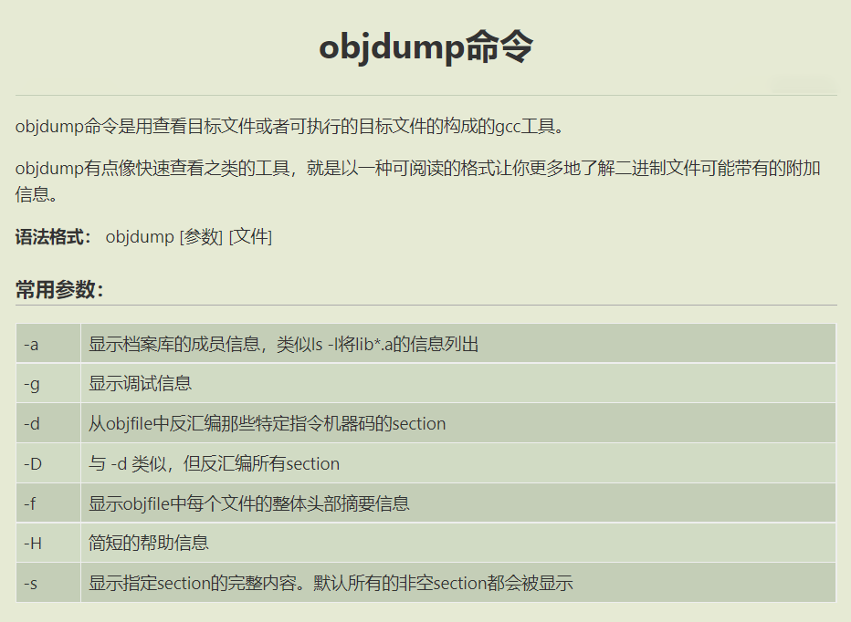对于文件
test.c,使用课程平台的MIPS交叉编译器编译为test.o文件
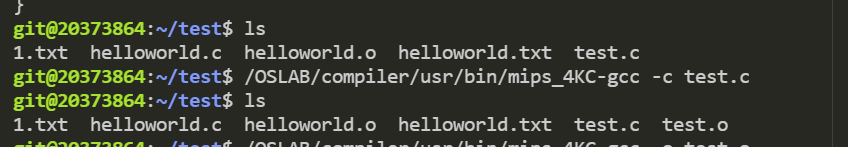再编辑链接器配置文件
test.lds
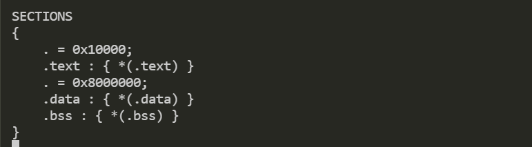最后通过链接器编译得到
test可执行文件
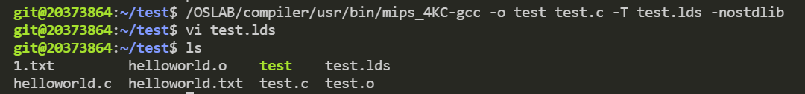
Thinking 1.2
- 也许你会发现我们的
readelf程序是不能解析之前生成的内核文件(内核文件是可执行文件)的，而我们之后将要介绍的工具readelf则可以解析，这是为什么呢？(提示：尝试使用readelf -h，观察不同)
答：
readelf -h vmlinux和readelf -h testELF的结果为
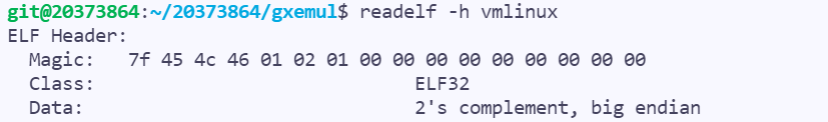
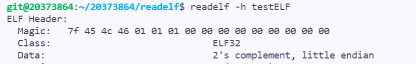由此可见，我们自己写的
readelf程序和testELF文件都是在小端（little endian）环境下运行，而vmlinux是大端（big endian）格式存储，在大端环境下运行的。因此我们自己的程序无法解析vmlinux内核文件，而linux默认的readelf指令有识别大小端并按相应方式处理的代解析程序能力
Thinking 1.3
在理论课上我们了解到，
MIPS体系结构上电时，启动入口地址为0xBFC00000（其实启动入口地址是根据具体型号而定的，由硬件逻辑确定，也有可能不是这个地址，但一定是一个确定的地址），但实验操作系统的内核入口并没有放在上电启动地址，而是按照内存布局图放置。思考为什么这样放置内核还能保证内核入口被正确跳转到？（提示：思考实验中启动过程的两阶段分别由谁执行。）
答：
MIPS系统加电起动后，MIPS处理器默认的程序入口是0xBFC00000，此地址在无缓存的KSEG1的地址区域内，对应的物理地址是0x1FC00000，即CPU从0x1FC00000开始取第一条指令，这个地址在硬件上已经确定为FLASH的位置，然后Bootloader执行功能，加载内核到内存（Linux内核镜像文件拷贝到RAM中某个空闲地址（LOAD地址）处），之后在本系统中将./tools/scse0_3.lds传给链接器ld，ld会将.text节的地址链接到0x80010000（即内存布局图中内核代码开始处）。关于内核ELF文件的入口地址(Entry point)，即bootloader移动完内核后，直接跳转到的地址，由ld写入ELF的头中，在本系统中通过ENTRY(_start)指明并跳转至内核启动代码./boot/start.S处
Thinking 1.4
sg_size和bin_size的区别它的开始加载位置并非页对齐，同时bin_size的结束位置(va+i)也并非页对齐，最终整个段加载完毕的sg_size末尾的位置也并非页对齐，请思考，为了保证页面不冲突（不重复为同一地址申请多个页，以及页上数据尽可能减少冲突），这样一个程序段应该怎样加载内存空间中。彻底并透彻地理解上图能帮助大家在后续实验中节约很多时间
答：
系统内核加载程序段地址分配为:
实验代码（自己编写的一个实例程序）的加载程序段地址分配为：
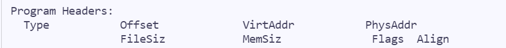
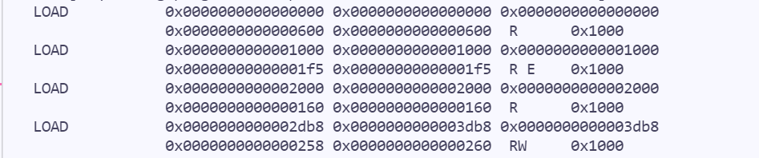由两个程序加载后的段地址可知，可见，系统内核在加载程序段时能保证进行内核加载时为页对齐的，而自己编写的程序并不能保证加载时页对齐，想要自己的程序在加载时页对齐，需要自定义或修改链接器在连接时的行为
Thinking 1.5
- 内核入口在什么地方？
main函数在什么地方？我们是怎么让内核进入到想要的main函数的呢？又是怎么进行跨文件调用函数的呢？
答：
内核入口位于
start.S中的_start函数（标号使用LEAF宏定义，该宏完成初始化堆栈等工作，以辅助函数调用）main函数在./init/main.c中我们通过一条
jal main指令调用main跨文件调用时，跳转地址为一个标签，由链接器在连接过程中重定位至函数的真正地址
Thinking 1.6
查阅 《See MIPS Run Linux》 一书相关章节，解释 boot/start.S 中下面几行对 CP0 协处理器寄存器进行读写的意义。具体而言，它们分别读/写了哪些寄存器的哪些特定位，从而达到什么目的？
1 | /* Disable interrupts */ |
答：
宏代换后的代码为
1
2
3
4
5
6
7
8
9
10
11
12
13
14
15geometry: {
type: 'Point',
coordinates: [123, 23]
},
fillStyle: 'red',
size: 30
},
/* Disable interrupts */
mtc0 zero, $12
......
/* disable kernel mode cache */
mfc0 t0, $16
and t0, ~0x7
ori t0, 0x2
mtc0 t0, $16mtc0 zero, $12读/写寄存器：
使状态寄存器 SR(Status Register)全部位置0达到目的：
禁用了中断- 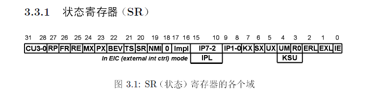
mfc0 t0, $16and t0, ~0x7ori t0, 0x2mtc0 t0, $16读/写寄存器：
取出CP0第16号寄存器Config（CPU参数设置寄存器）,并将后三位置0，再将第二位置1，并写回Config寄存器达到目的：
禁用了内核模式缓存（Cache）- 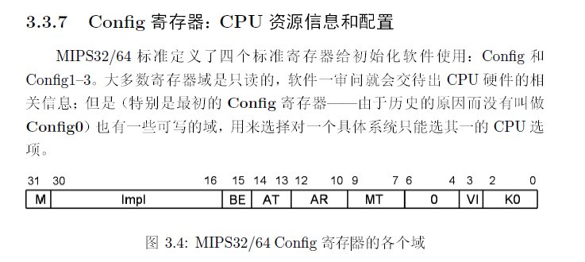
- 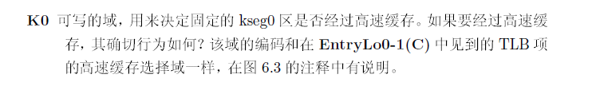
- 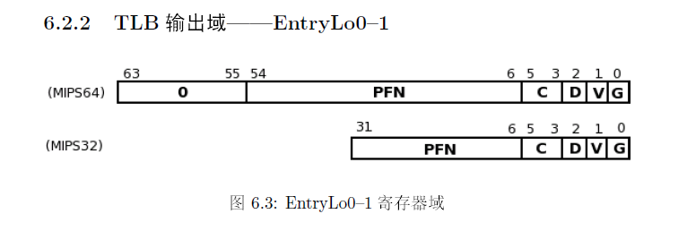
- 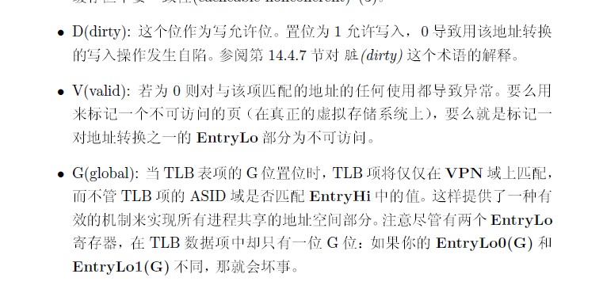
二. 实验难点：
大量C语言代码的阅读与理解
补全代码时的代码之间的逻辑关系复杂
ELF文件的自定义读取，Linker Script链接器，MIPS汇编语言等重难点的掌握…
三. 体会与感想：
难度评价：6/10
实验用时：5h， 撰写实验报告用时：3h
体会与感想：
Lab1使我比较浅显的认识到MIPS操作系统的启动的一些步骤，对操作系统代码执行流程有一个大致的基础的了解
课上
lab1-1-exam：
从原来的要求输出 sh_addr 变为要求输出 sh_offset 和 sh_size ，极其简单， 5min 内解决
lab1-1-Extra：
研究 Program segment header 中每一段的 p_vaddr 以及 p_memsz 来得到每一段在内存中存储位置，再假设页面大小是 4KB 并且严格页对齐然后研究每一段是否存在共用页和冲突页的情况，并且根据对应情况输出对应结果
by Tan